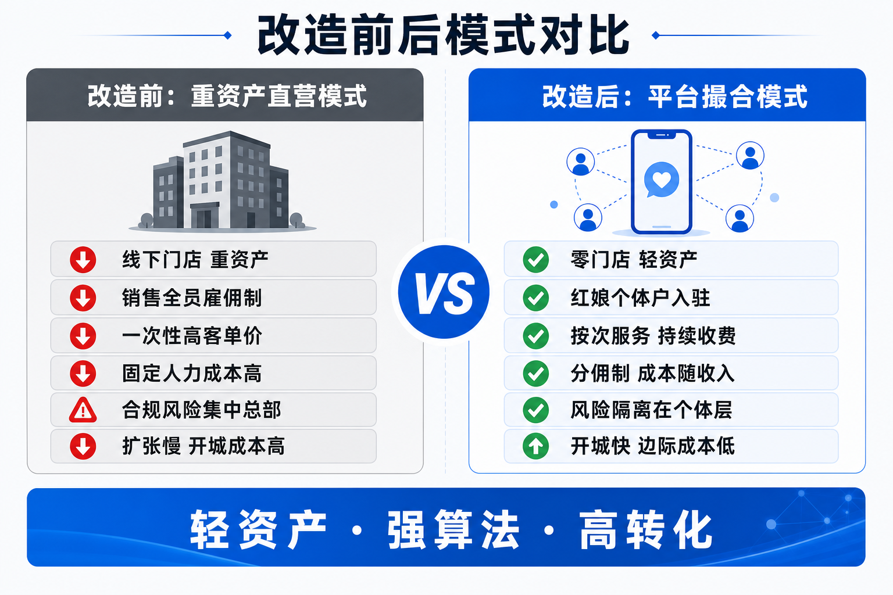
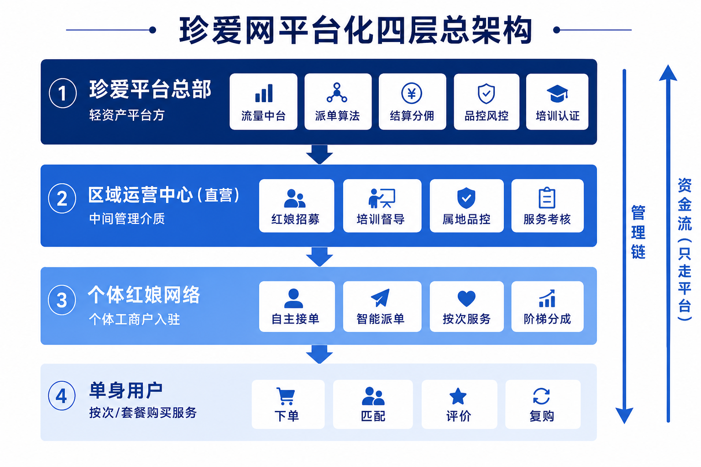
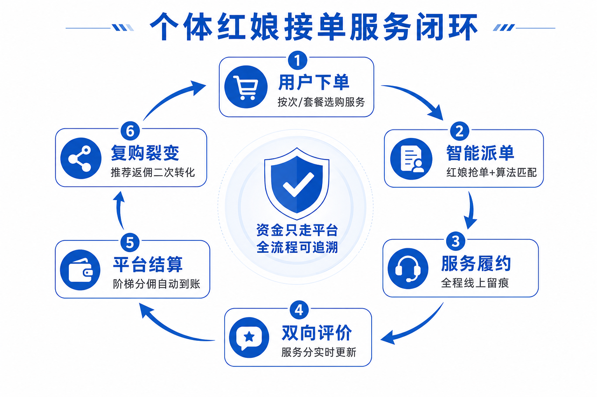
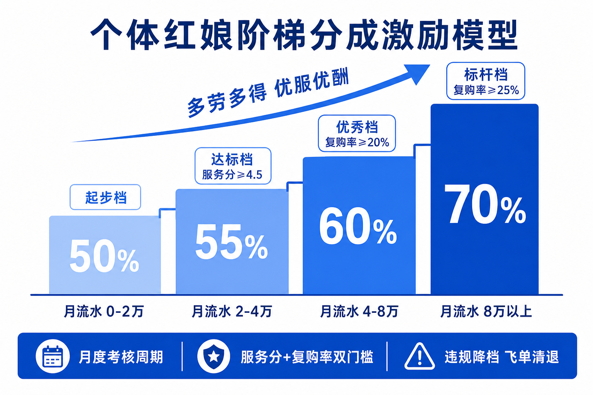

| 维度 | 成型后的状态 |
|---|---|
| 商业本质 | 从「卖会员合同的婚介公司」变为「抽取服务佣金的撮合平台」，收入=平台佣金+会员订阅+增值服务 |
| 资产形态 | 零服务门店。资产只有：四端系统、算法、品牌、用户池、红娘网络 |
| 人的形态 | 总部精干中台团队＋各城直营运营中心小编制团队（雇佣制）＋大规模个体红娘网络（个体工商户合作制，非雇佣） |
| 收费形态 | 从一次性高客单价合同 → 按次/按套餐小额多次付费，全生命周期持续收费 |
| 风险形态 | 服务履约责任隔离在个体工商户层面；资金全部走平台，交易全程留痕，合规风险不回流总部 |
| 扩张形态 | 开一座城=设一个运营中心+招募一批本地红娘，无门店装修与大额固定投入，边际成本极低 |

| 东郊到家 | 珍爱网（改造后） | 角色与性质 |
|---|---|---|
| 平台总部 | 珍爱平台总部 | 轻资产平台方：产品、算法、结算、品控、规则制定。不直接雇佣服务者、不直接履约 |
| 城市运营中心 | 区域运营中心（直营） | 中间管理介质：总部直营编制，负责属地红娘的招募、培训、督导、品控与考核。管人不碰交易资金 |
| 按摩技师 | 个体红娘 | 个体从业者：注册个体工商户、与平台签署《合作协议》入驻，非劳动关系。自主接单+平台派单，按阶梯比例分佣 |
| 消费用户 | 单身用户 | 需求方：App下单，按次或按套餐购买婚恋服务，服务后评价 |

两条主线贯穿四层：
主站App、拾花有伴、趣约会等全渠道获客与线索池统一管理；老资源线索回流盘活；合伙人裂变体系（用户/红娘皆可推广返佣，替代大额广告投放）。
按用户画像、红娘专长标签、服务分、地理位置、响应时长智能匹配；「派单+抢单」双模式；防止头部红娘垄断单源，保障中腰部单量（对应东郊智能派单机制）。
资金统一进出平台账户；按月考核周期自动计算阶梯分佣；红娘个体户对公/对私打款自动化；发票与税务合规链路（个体户自开票）。
红娘资质统一核验与前台公示；服务过程线上留痕（沟通记录/服务确认）；投诉分级处理；飞单监测模型（通讯行为异常+成单率异常识别）；客单价熔断线。
红娘持证上岗体系：入驻培训→考试认证→分级晋升（初级/资深/金牌）；标准化服务SOP与话术库；线上课程复训与年审。
精干中台，不设庞大直营服务队伍。所有新增职能优先系统化、算法化，而非人力堆叠——轻资产、强算法。
| 端口 | 使用者 | 核心功能 |
|---|---|---|
| 用户端 App | 单身用户 | 浏览红娘/服务SKU、下单支付、匹配进度、服务评价、复购与推荐返佣 |
| 红娘端 App | 个体红娘 | 接单/抢单、日程管理、客户档案（脱敏）、收入与分佣档位实时可见、培训课程、服务分看板 |
| 运营中心工作台 | 区域运营中心 | 属地红娘名册与状态、招募漏斗、培训排期、品控抽检、投诉工单、区域经营看板 |
| 总部管理后台 | 平台总部 | 全国经营大盘、派单策略配置、分佣规则配置、风控预警、运营中心KPI考核 |
① 红娘招募与资质初审 ② 岗前培训与持续督导 ③ 属地品控抽检与投诉现场处置 ④ 属地红娘活跃度与服务考核
① 不收用户任何款项 ② 不与用户签任何服务合同 ③ 不自建服务场所对客经营 ④ 不干预派单算法结果（只可申诉）
| 岗位 | 编制 | 职责 |
|---|---|---|
| 中心长 | 1 | 区域经营全责，向总部运营VP汇报 |
| 红娘招募官 | 1-2 | 属地红娘招募、入驻引导、个体户注册协办 |
| 培训督导 | 1-2 | 岗前培训执行、标杆案例萃取、周度督导例会 |
| 品控专员 | 1 | 服务抽检、投诉处置、飞单线索核查上报 |
单城4-6人管理100-300名个体红娘，管理杠杆约1:40。对比旧直营门店单店动辄20-40名雇佣销售，人力成本结构发生数量级变化。
① 实名+背景核验（无欺诈/涉案记录）→ ② 资质认证（婚恋咨询相关培训证书，无证者先培训后考证）→ ③ 个体工商户注册（运营中心协办，1-3天）→ ④ 签署《合作协议》+ 合规承诺书 → ⑤ 岗前培训考核通过，开通接单权限。
| 服务SKU | 参考定价（按次） | 说明 |
|---|---|---|
| 精准牵线 | ¥199-399/次 | 红娘人工筛选+双向确认+牵线引荐，成功见面另计 |
| 约会安排与陪同策划 | ¥299-599/次 | 见面场景策划、破冰引导、约会后双方回访 |
| 情感咨询 | ¥199-499/时 | 单次咨询，线上为主，可续购 |
| 形象与资料优化 | ¥99-299/次 | 资料照指导、自我介绍优化、第一印象诊断 |
| 月度陪伴套餐 | ¥999-2999/月 | 组合SKU订阅，可随时取消——续费靠满意而非合同锁定 |
客单价熔断线：单用户单月累计消费超过阈值（建议 ¥6,000）触发平台复核与冷静期提醒，从机制上杜绝诱导高额消费——这是对东郊「诱导办卡投诉」教训的预防，也符合行业合规底线。

东郊到家原型：15天考核周期，技师流水0-6500元分50%，逐档升至14500元以上分80%，叠加续购率与成长值门槛。珍爱网按婚恋服务客单价与履约周期特点调整为月度考核周期：
| 档位 | 月流水区间 | 红娘分成 | 晋升门槛（双条件） |
|---|---|---|---|
| 起步档 | 0 - 2万 | 50% | 完成岗前认证即可接单 |
| 达标档 | 2万 - 4万 | 55% | 服务分 ≥ 4.5 |
| 优秀档 | 4万 - 8万 | 60% | 服务分 ≥ 4.6 且用户复购率 ≥ 20% |
| 标杆档 | 8万以上 | 70% | 服务分 ≥ 4.7 且用户复购率 ≥ 25% |

平台飞轮：更多用户 → 红娘收入更高 → 吸引更优红娘入驻 → 服务质量与口碑提升 → 更多用户。每一环都有数据留痕，飞轮转速可度量。
| 东郊到家已暴露的问题 | 珍爱网蓝图内置对策 |
|---|---|
| 技师与客户绕过平台私下交易（飞单） | ① 客户联系方式全程脱敏（虚拟号）② 私下收款一经核实立即清退+黑名单 ③ 飞单监测模型（沟通中断+复购异常识别）④ 高分成档位让头部红娘算得过账：留在平台比飞单更赚 |
| 签约商户执照缺失、名实不符被媒体曝光 | 入驻五步流程强制核验，红娘前台页面公示执照+资质+实名认证，缺一不得上架 |
| 诱导消费、办卡投诉、退款难 | 按次小额计费为主、套餐可随时取消按次退余、单月消费熔断线、7天冷静期退款通道 |
| 平台对服务者维护弱、关系松散易流失 | 直营运营中心专职做红娘留存（培训/督导/荣誉体系/90天留存率考核），这正是「直营运营中心」相对东郊加盟制中心的差异化优势 |
| 服务过程不透明、纠纷举证难 | 服务节点线上确认+沟通留痕，纠纷时平台可完整还原过程 |
总部风险隔离逻辑：履约责任主体是红娘个体工商户，平台承担的是信息撮合与管理责任；叠加资金只走平台、过程全留痕、资质全公示三道防线，服务合规风险被隔离在个体层面，与门店SaaS隔离、邀约外包化属同一风险哲学的第三块拼图。
| 维度 | 改造前（重资产直营） | 改造后（平台模式） |
|---|---|---|
| 成本结构 | 门店租金+装修+大编制雇佣销售底薪社保，固定成本高企 | 零门店；红娘无底薪按单分佣，成本随收入线性变化，佣金毛利结构清晰 |
| 人效杠杆 | 1名店长管20-40名雇佣销售，管理半径小 | 1个4-6人运营中心管100-300名个体红娘，杠杆1:40 |
| 合规风险敞口 | 销售逼签、高客单纠纷、退费潮全部集中在总部主体 | 履约责任在个体户层面，资金留痕可举证，客单价熔断防纠纷于未然 |
| 扩张速度 | 开城=选址+装修+招聘+养店，单店回本周期长 | 开城=1个运营中心+首批红娘招募，人到即开业，边际成本极低 |
| 现金流模型 | 先收大额合同款、后置长周期履约，退费即失血 | 按次收费即时履约、T+7结算，预收退费敞口小，现金流健康可预测 |
| 收入天花板 | 受门店数量与销售人数线性制约 | 受红娘网络规模与算法匹配效率驱动，具备指数扩张可能 |
| 阶段 | 周期 | 关键动作与验收里程碑 |
|---|---|---|
| 试点期 | 第1-4个月 | 深圳/重庆任选1-2城设直营运营中心；招募首批50-100名个体红娘（优先转化现有优秀红娘为首批个体入驻者）；四端系统MVP上线。验收：跑通「下单→派单→履约→结算」全链路，首月GMV达标，投诉率≤3‰ |
| 验证期 | 第5-8个月 | 验证阶梯分成与品控模型；红娘90天留存≥70%；用户复购率≥20%；单城运营中心佣金覆盖成本1.5倍。验收：单城模型盈利，形成《开城手册》标准化文档 |
| 复制期 | 第9-18个月 | 按《开城手册》批量复制至8-12城，运营中心中心长从试点城市督导队伍中晋升输出；裂变体系全量启动。验收：平台收入占公司新业务收入比重达成年度目标 |
| 规模期 | 第19-36个月 | 覆盖主要一二线城市；红娘网络破万人；算法派单占比≥80%；输出行业服务标准。验收：成为婚恋服务平台模式的品类第一 |
投入原则：试点期总投入控制在小额验证规模（系统MVP+2个运营中心+启动运营费），先射子弹再射炮弹，验证通过再加大投入，现金流红线全程不动摇。
请赵总决断：① 试点城市选择（建议深圳+重庆）；② 阶梯分成档位与熔断线金额是否按本蓝图口径执行；③ 是否启动法务对《合作协议》的专项论证。